7. Viaje a Portugal
7. Viaje a Portugal
2 a 8 de diciembre 2021
Día 3, Visita a Lisboa
4 de diciembre 2021


110. Almada
110. Almada
Por la mañana lo primero que visite fue el barrio de Almada, para tomar fotos al puente de Lisboa y ver una vistá panorámica de la ciudad ya que mi hostal estaba muy cerca.
El coste de los hostales y hoteles es mucho más barato al otro lado del río y si quieres visitar los pueblos al sur de Lisboa merece la pena, Ademas las playas de esta zona y sitios de ocio nocturno son mejores estando mi hostal en Caparica.
Almada es un antiguo barrio industrial que se ha modernizado en las últimas decadas. Ofrece la vista de un pequeño pueblo pesquero portugues en la misma capital pero al otro lado del puente de Lisboa.
El principal motivo para vistar el barrio es ver mejor el Cristo rey de Lisboa. Este Cristo se baso en el de río de Janeiro pero no es tan grande. El edificio que sirve de planta mide 75 metros y el cristo 28 metros. También se puede ver desde otro angulo el puente 25 de Abril, puente colgante que une las dos partes de Lisboa.

Existen varias cosas que hacer como visitar la fragata de Fernando II de Gloria, última en ser botada por la armada portuguesa.
Este barco funcionaría como museo con fines educativos pero se incendiaría en 1963. Estaría 30 años abandonado hasta que ha sido restaurado y hoy en día es uno de los focos turísticos de la zona. También existe un museo naval en la Almada que se centran más que en la armada en la pesca y los utensilios y herramientas ligadas a esta industria.
Otro de los puntos de interes son algunas de iglesias de la zona como la de Santiago, en la primera imagen, o la de nuestra Señora de la Asunción. También se encuentra el convento de los capuchinos, un convento franciscano del siglo XVI en una zona muy arbolada para pasear.
Para visitar en este barrio tenemos la casa de la Cerca, segunda y tercera imagen, que tiene un museo en su interior, y alguna de sus calles.
La calle principal del barrio es la rua capitao leitao, en la imagen, caller comercial y turística que tiene como edificio emblemático la cámara de comercio. Este edificio estaba siendo restaurando cuando estuve, sobre todo la torre del reloj.
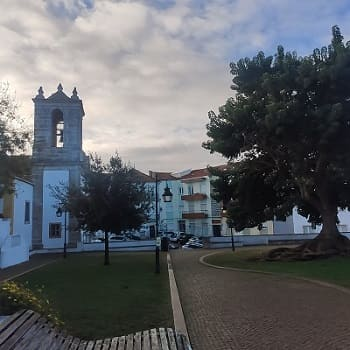
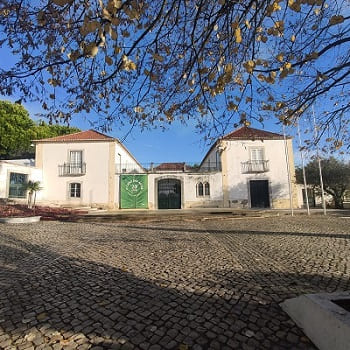
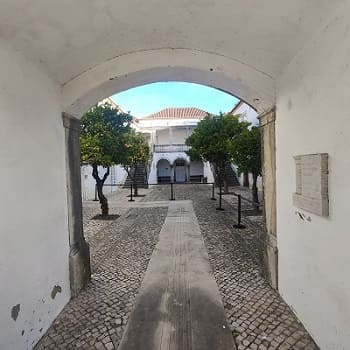
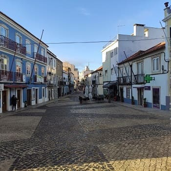


111. Lisboa
111. Lisboa
Después puse rumbo a
Lisboa aparcando muy cerca del puente ya que justo este y la carretera limitan la zona libre de polución de la ciudad entre este y oeste. Primente visite el oeste de la ciudad estando los monumentos más importantes al oeste pero el casco histórico y la mayoría de cosas que ver al este.
En el oeste lo primero que vería sería
la capela de santo Amaro muy cerca de donde aparque el coche.
La capilla, de mediados del siglo XVI, está formada por una nave circular y está unida a la capilla mayor, que es de reducidas dimensiones. Ambas se hallan en la misma planta. La nave está rodeada en todo su perímetro por una galilea, en la que se abren tres grandes puertas de rejas. Las paredes interiores del atrio están enteramente revestidas por bellos azulejos policromos de finales del siglo XVI, manieristas, con diversos elementos decorativos que hacen referencia a los milagros del santo.

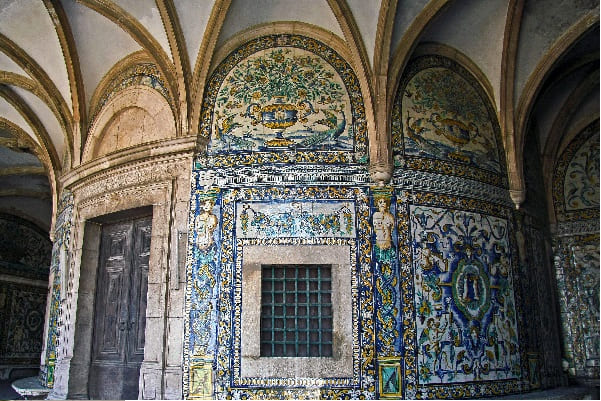
Siguiendo la calle junto al río vería diferentes
casas palaciegas del siglo XIX, como el palacio de los condes de Ribeira, el palacio Burnay, el instituto superior naval de guerra o algún palacio deshabitado como el tercero de la imagen, llegando ya al final
al palacio del presidente de la República, el palacio nacional de Bélem que no es visitable, pero si el museo del Presidente.
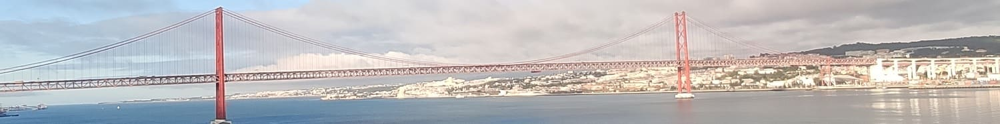
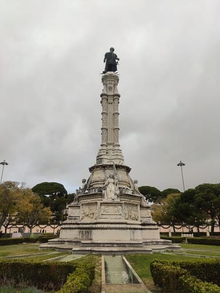
En frente del palacio de la república se encuentra el monumento de
la estatua de Alfonso de Albuquerque, en el jardín que lleva su nombre, que es sitio de reunión de muchos guías que comienzan a enseñar la ciudad desde este punto. Al lado esta
el museo Nacional de coches, un lugar ideal si eres aficionado a los automoviles y a la historia de los coches. Esta zona esta toda llena de museos y palacios ya que esta en la zona más visitada de Lisboa.
Muy cerca esta el monumento más famoso y visitado de todo Portugal,
el monasterio de los Jerónimos cuya iglesia es desde mi punto de vista la más bonita de Portugal.
En importancia además estaría por encima del monasterio de Tomar, siendo grande y ocupando algo menos que su monasterio. Este monasterio tiene dos grandes claustros cuyo precio de entrada, 10 euros, me parece excesivo ya que la visita a la iglesia es gratuita. La iglesia tiene unas dimensiones grandes, siendo muy largo el camino hasta el retablo mayor. Además la entrada reducida es difícil de conseguir ya que profesores o estudiantes les piden una hoja certificada de que vienen a Lisboa por estudios. Además puedes visitar
el museo arqueológico y el museo de la Marina que se encuentran dentro de lo que fue el monasterio.
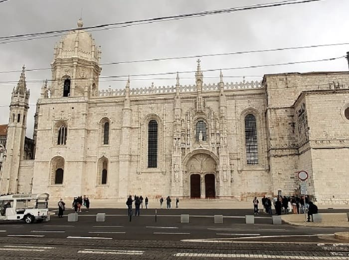
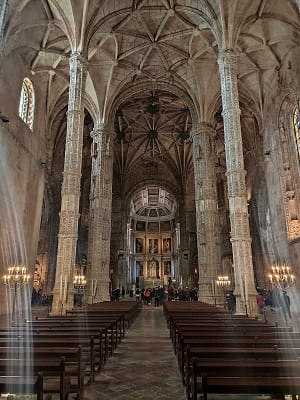
Fue diseñado en estilo manuelino por el arquitecto Juan de Castillo, fue encargado por el rey Manuel I de Portugal para conmemorar el afortunado regreso de la India de Vasco de Gama. Se fundó en 1501 sobre el enclave de la Ermida do Restelo en lo que fue la playa de Restelo, ermita fundada por Enrique el Navegante, y en la cual, Vasco de Gama y sus hombres pasaron la noche en oración antes de partir hacia la India. La primera etapa constructiva de la iglesia nueva comenzó en 1514 y fue ampliándose y modificándose hasta el siglo XX. Es de los monasterios más largos del mundo con casi 300 metros y en el esta el mausoleo en el que están enterrados las personas más importantes de la época en la que se levanto, el siglo XVI, la familia real y sus descendientes.
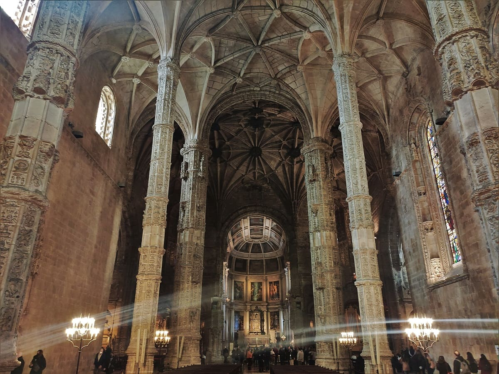
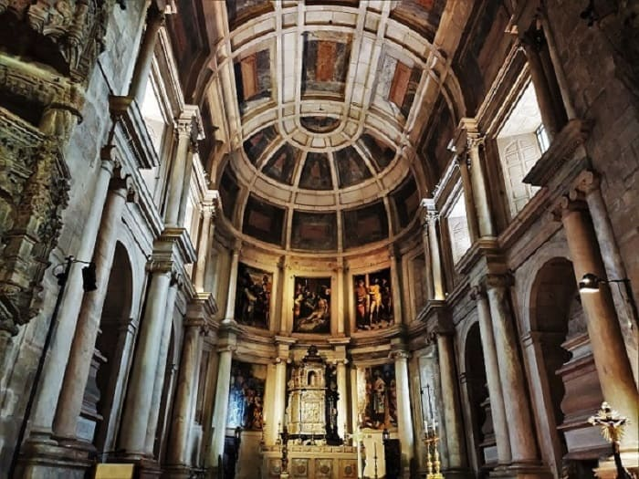
Teniendo un día para aprovechar al máximo Lisboa, no visitaría estos museos y fui directamente a ver
la Torre de Belem junto al mar. También el monumento a los caídos en combate.
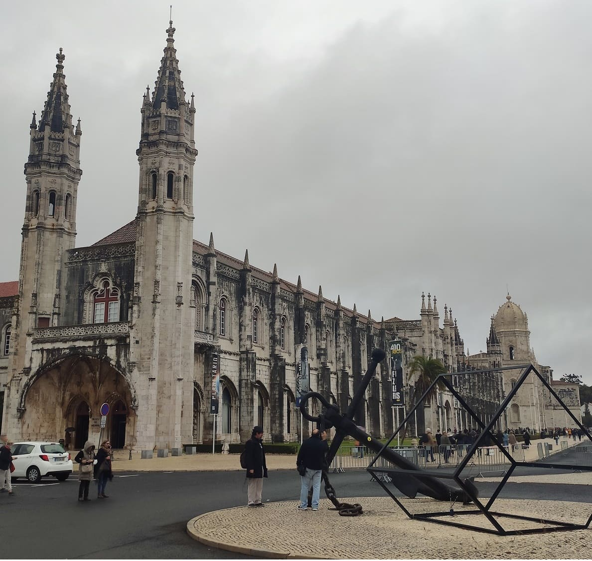
Después iría hacia el norte
al palacio de Aduja. La entrada no es cara siendo de 5€ y la reducida de 2,5€. Este palacio cuenta con muchas salas importantes como el salón comedor donde los reyes del siglo XIX han realizado algunas celebraciones y el salon del trono. Este palacio fue mandado construir en los últimos años de la monarquía y tiene previsto terminar de restaurarse en 2030. Cuando fui yo es verdad que había objetos que estaban moviéndose pero casi la totalidad de las salas estaban completas. Tanto por la cantidad de salas como por la calidad y detalles tiene mucho más valor el interior que cualquier otro palacio de Portugal, incluyendo los de Sintra.
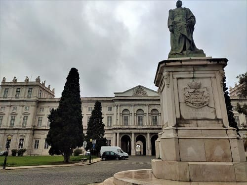
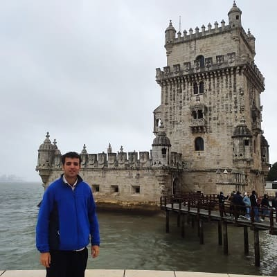
Las salas más importantes son
la Sala Real que se muestra en la siguiente imagen. Con los tronos de los reyes.
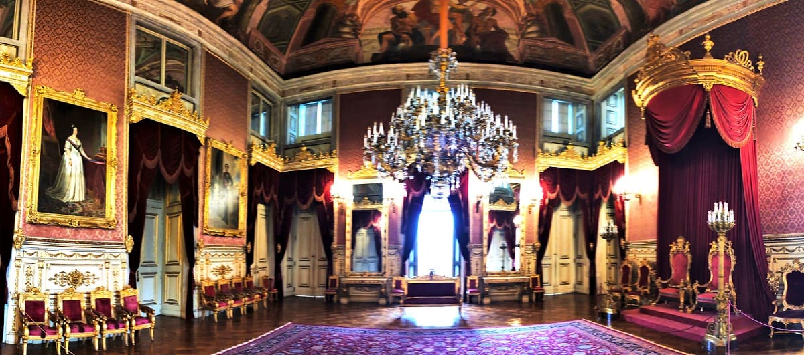
Y
el Gran Comedor, donde se harían las más grandes fiestas de la nobleza y monarquía portuguesa. Como se ve en la imagen no tiene nada que envidiar a otros grandes palacios reales europeos como el Palacio Real de Madrid o el Palacio de Versalles de París.
Después de la visita iría a comer a un restaurante cerca del puente de la ciudad para después coger un autobús hacia el casco histórico.
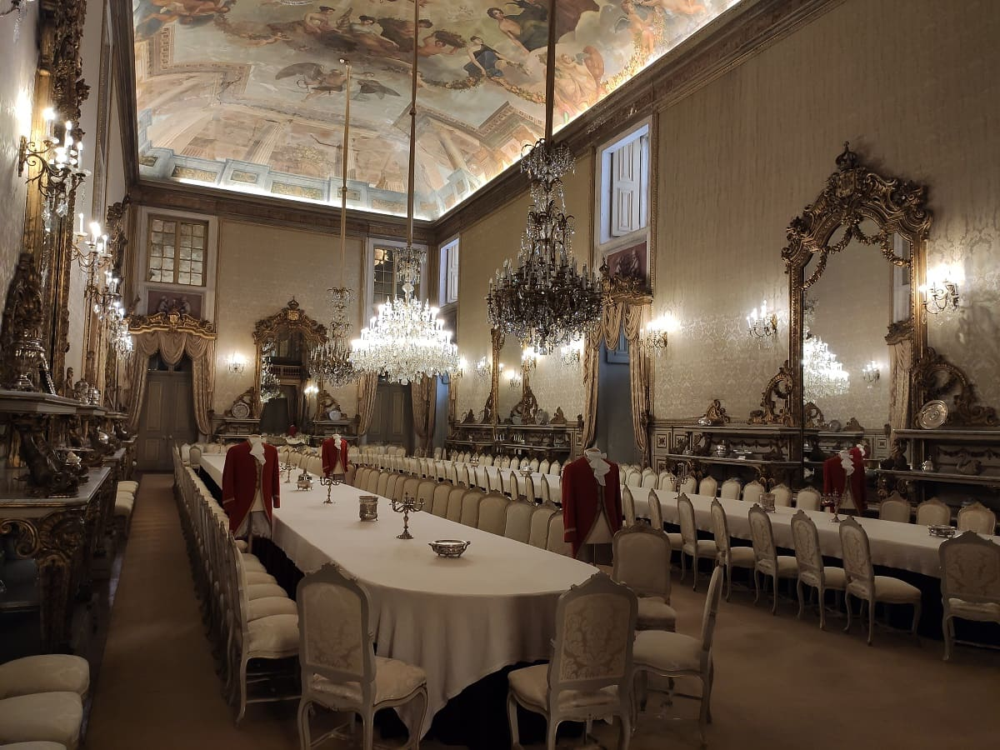
Del casco vería algunas iglesias pero desde fuera, como la iglesia de san Antonio en la imagen, san Nicolas, Santiago, santa Lucía y otras . Casi todos de estilo renacentista de a partir del siglo XVI.
El edificio religioso que más historia tiene y que más merece la pena junto al monasterio de los Jerónimos y la catedral es
el monasterio de san Vicente de Fora, donde esta el panteón de los Braganza, los últimos reyes de Portugal antes de la república, desde el siglo XVII. Debido a la restauración que se hizo en el siglo XVII, tiene una mezcla interesante de estilos desde el románico, pasando por el renacentista más moderno como el manierista y el barroco. Otro edificio religioso de consideración es la basílica de la estrella de finales del siglo XVIII y de estilo barroco.
Luego visitaría
la catedral, La Sé de Lisboa. Desde el inicio de la construcción en el año 1147, el edificio ha sido modificado en varias ocasiones y ha sobrevivido a varios terremotos. Actualmente es el resultado de una mezcla de distintos estilos arquitectónicos. El primer edificio fue construido entre 1247 y la abuela de don Juan, en las primeras décadas del siglo XIII en estilo Románico tardío. En aquel tiempo, las reliquias de San Vicente de Huesca (patrón de Lisboa) se llevaron a la catedral desde el sur del país. A finales del siglo XIII, el rey Dionisio I de Portugal construyó un convento gótico y su sucesor, Alfonso IV convirtió la capilla principal en panteón real para sí y su familia. En 1498, la reina Leonor fundó la Misericórdia de Lisboa en una de las capillas del convento de la catedral. La Misericórdia es una institución caritativa católica que luego se expandió por otras ciudades y que fue muy importante en Portugal y en sus colonias. Se han encontrado restos romanos por lo que en su origen pudiera haber habido un templo romano dedicado a alguna deidad.
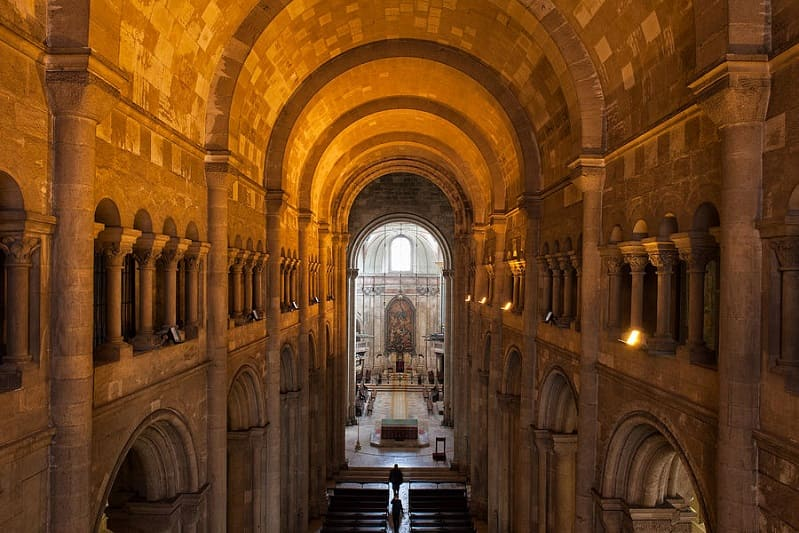
Luego iría
al castillo de San Jorge que pese a costar 10€, por ser profesor entraría sin pagar. Este castillo y muchos de los monumentos de la capital no valen el precio que cuesta la entrada pero por ser la capital y ser más turística que otros sitios tiene esos precios. El castillo de san Jorge es muy parecido al de Sesimbra con la diferencia que el último la entrada es gratuita. El de Palmela es más bonito y también es gratis entrar, castillos que visitaría al día siguiente de ver Lisboa.
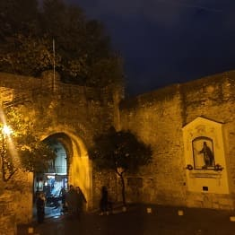
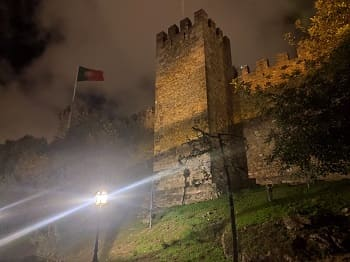
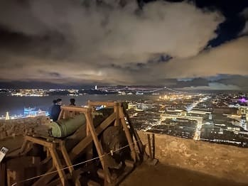
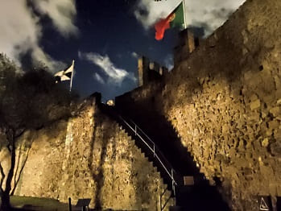
Las vistas desde el castillo son estupendas para realizar fotografiás desde diferentes ángulos y que salga la ciudad entera.
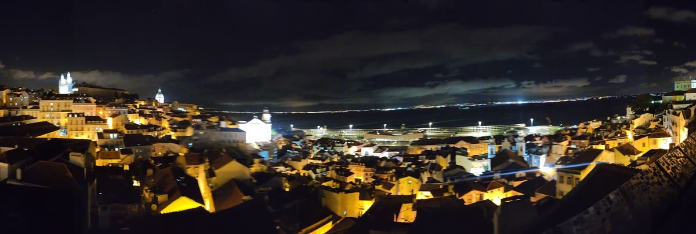
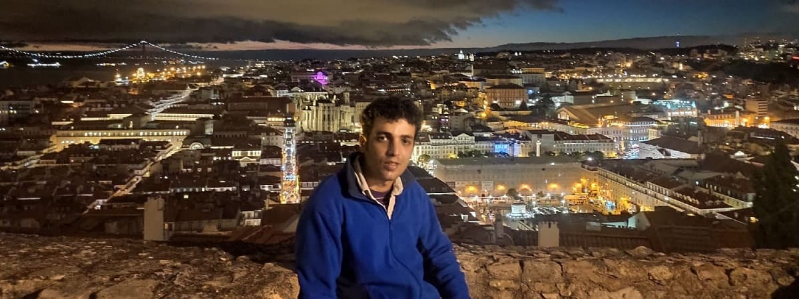
Después paseando por sus calles tomaría una serie de fotografías que muestran la actividad de una ciudad que no para, debido sobre todo al turismo ya que los portugueses no son tan nocturnos como los españoles.
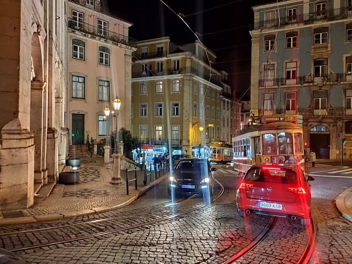
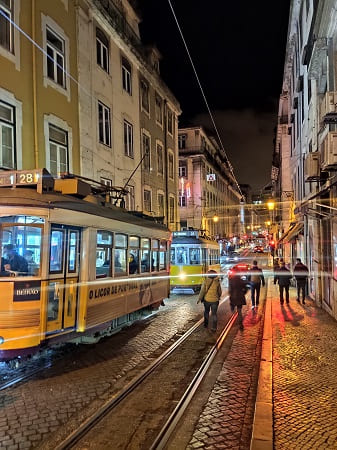
Después bajaría a la rua Augusta y su arco y
la Plaza del Comercio, plaza más famosa de todo Portugal.
Accedemos a la plaza pasando bajo el imponente
Arco Triunfal de la comercial Via Augusta; en él podemos contemplar algunas esculturas, obra de Vitor Bastos, de portugueses notables, como Vasco de Gama, el Marqués de Pombal o Nuno Alvares Pereira. En la parte superior, alegorías de la Gloria, el Genio y el Valor flanquean una inscripción que reza:
VIRTVTIBVS MAIORVM VT SIT OMNIBVS DOCVMENTO
Que las virtudes de los más grandes sean una enseñanza para todos
Desde su reconstrucción, la plaza ha sido testigo de acontecimientos históricos muy relevantes, como el atentado contra el rey Carlos y su hijo Luis Felipe a comienzos del siglo XX o el levantamiento militar de 1974, durante la Revolución de los Claveles que derrocó el régimen salazarista.
Además, es en la Plaza del Comercio donde lisboetas y turistas se reúnen cada Nochevieja en Lisboa para dar la bienvenida al año nuevo entre fuegos artificiales y chupitos de ginjinha, amenizados, habitualmente, por conciertos y espectáculos.
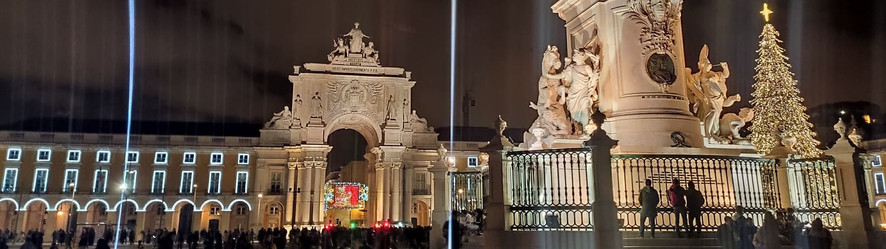
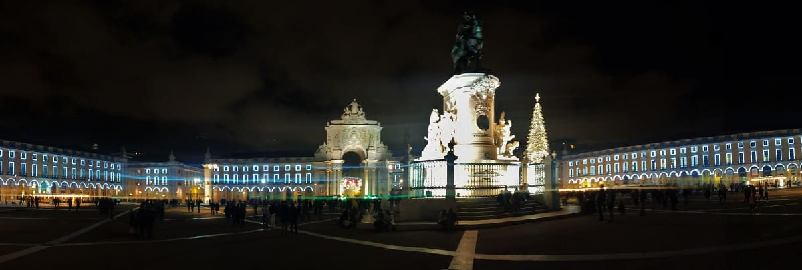
Otra de las plazas simbólicas de Lisboa es
la plaza de Luis Camões, donde se encuentra el ayuntamiento de Lisboa, en la imagen central. A la derecha el arco de la plaza del comercio y a la izquierda la rua Augusta.
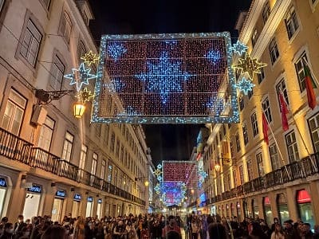
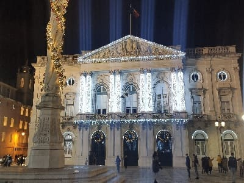
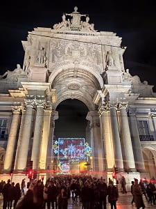
Además la ciudad tiene mucho que ofrecer, a parte de la gran cantidad de monumentos, existe una gran oferta gastronómica donde destaca el bacalao. El pescado es el plato estrella de la ciudad y también del sur de Portugal. Con todo esto volvería al hotel habiéndome quedado unicamente por ver
el Panteón Nacional de Portugal y la Basílica de la Estrella.
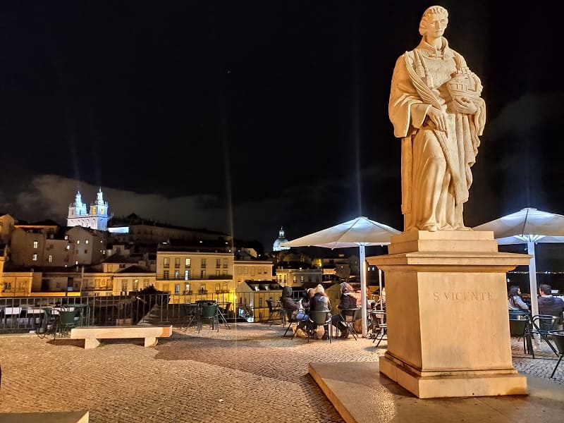
Monasterio de los Jerónimos, s.XVI. y Torre de Belém.
4
Día 4, pueblos al sur de Lisboa y Setubal (CLICK para continuar)
5 de diciembre de 2021

![[Valid RSS]](https://www.onepointsync.com/wp-content/uploads/2016/08/valid-rss-rogers.png "Validate my RSS feed")